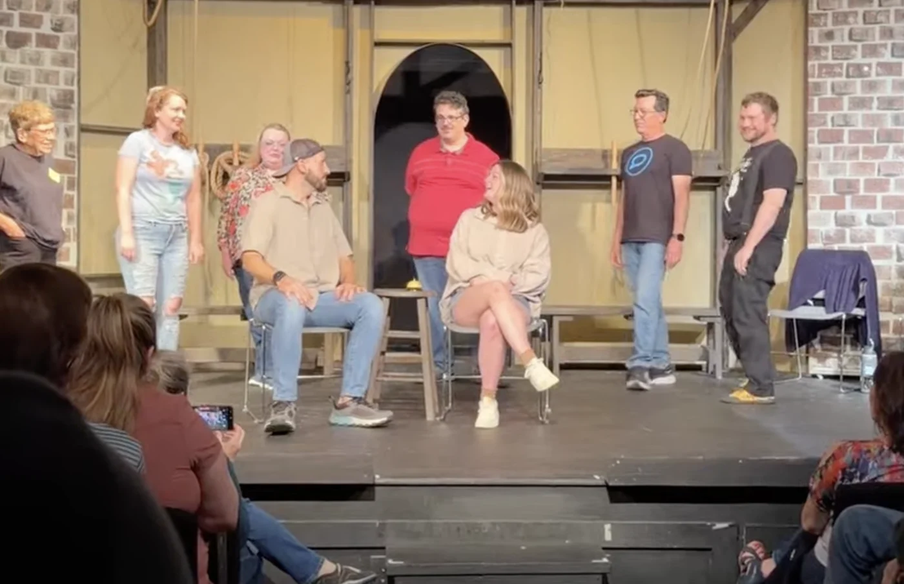
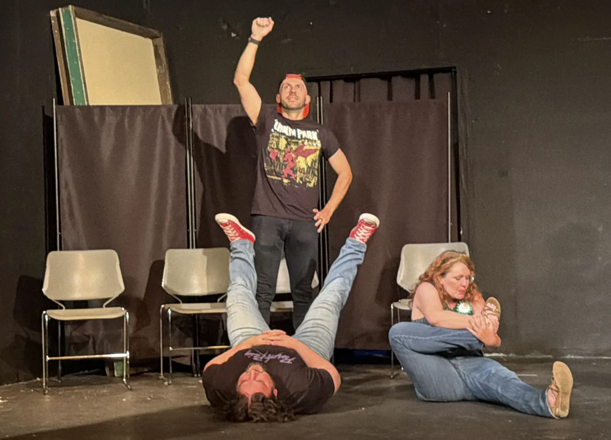
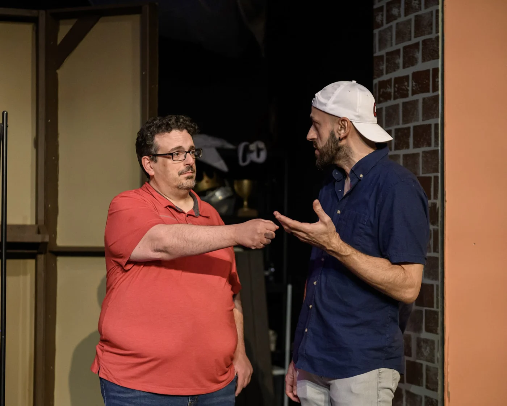

02 / Stage notes
In the moment.
On the stage.
Selected moments from improv shows, rehearsals, and live performance. A small visual archive, one scene at a time.
01 / The archive
Scenes from the stage.


March 27, 2026


May 1, 2026


June 19, 2026
Select a photograph to view it in full.
A note on improv
Listen closely.
Find the possibility.
Improv is interesting because it forces attention, listening, timing, risk, and fast pattern recognition. That makes it more than performance. It is a way to practice thinking in real time.
Keep the conversation going
Good things start
with a conversation.
↗Technology, language, creative work — or something in between.